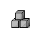

12. The object table
12.1 The object table is held in dynamic memory and its byte address is stored in the word at $0a in the header. (Recall that objects have flags attached called attributes, numbered from 0 upward, and variables attached called properties, numbered from 1 upward. An object need not provide every property.)
12.2 The table begins with a block known as the property defaults table. This contains 31 words in Versions 1 to 3 and 63 in Versions 4 and later. When the game attempts to read the value of property n for an object which does not provide property n, the n-th entry in this table is the resulting value.
12.3 Next is the object tree. Objects are numbered consecutively from 1 upward, with object number 0 being used to mean "nothing" (though there is formally no such object). The table consists of a list of entries, one for each object.
12.3.1 In Versions 1 to 3, there are at most 255 objects, each having a 9-byte entry as follows:
the 32 attribute flags parent sibling child properties ---32 bits in 4 bytes--- ---3 bytes------------------ ---2 bytes--
parent, sibling and child must all hold valid object numbers. The properties pointer is the byte address of the list of properties attached to the object. Attributes 0 to 31 are flags (at any given time, they are either on (1) or off (0)) and are stored topmost bit first: e.g., attribute 0 is stored in bit 7 of the first byte, attribute 31 is stored in bit 0 of the fourth.
12.3.2 In Version 4 and later, there are at most 65535 objects, each having a 14-byte entry as follows:
the 48 attribute flags parent sibling child properties
---48 bits in 6 bytes--- ---3 words, i.e. 6 bytes---- ---2 bytes--
12.4 Each object has its own property table. Each of these can be anywhere in dynamic memory (indeed, a game can legally change an object's properties table address in play, provided the new address points to another valid properties table). The header of a property table is as follows:
text-length text of short name of object -----byte---- --some even number of bytes---
where the text-length is the number of 2-byte words making up the text, which is stored in the usual format. (This means that an object's short name is limited to 765 Z-characters.) After the header, the properties are listed in descending numerical order. (This order is essential and is not a matter of convention.)
12.4.1 In Versions 1 to 3, each property is stored as a block
size byte the actual property data
---between 1 and 8 bytes--
where the size byte is arranged as 32 times the number of data bytes minus one, plus the property number. A property list is terminated by a size byte of 0. (It is otherwise illegal for a size byte to be a multiple of 32.)
12.4.2 In Versions 4 and later, a property block instead has the form
size and number the actual property data --1 or 2 bytes--- --between 1 and 64 bytes--
The property number occupies the bottom 6 bits of the first size byte.
12.4.2.1 If the top bit (bit 7) of the first size byte is set, then there are two size-and-number bytes as follows. In the first byte, bits 0 to 5 contain the property number; bit 6 is undetermined (it is clear in all Infocom or Inform story files); bit 7 is set. In the second byte, bits 0 to 5 contain the property data length, counting in bytes; bit 6 is undetermined (it is set in Infocom story files, but clear in Inform ones); bit 7 is always set.
12.4.2.1.1 ***[1.0] A value of 0 as property data length (in the second byte) should be interpreted as a length of 64. (Inform can compile such properties.)
12.4.2.2 If the top bit (bit 7) of the first size byte is clear, then there is only one size-and-number byte. Bits 0 to 5 contain the property number; bit 6 is either clear to indicate a property data length of 1, or set to indicate a length of 2; bit 7 is clear.
12.5 It is the game's responsibility to keep the object tree well-founded: the interpreter is not required to check. "Well-founded" means the following:
(a) An object with a sibling also has a parent.
(b) An object is the parent of exactly those objects in the sibling list of its child.
(c) Each object can be given a level n, such that parentless objects have level 0 and all children of a level n object have level n+1.
Remarks
The largest valid object number is not directly stored anywhere in the Z-machine. Utility programs like Infodump deduce this number by assuming that, initially, the object entries end where the first property table begins.
Infocom's 'Sherlock' contains a bug making it try to set and clear attribute 48.
The reason why the second property size byte needs to have top bit set is that the size field must be parsable either forwards or backwards -- the Z-machine needs to be able to reconstruct the length of a property given only the address of the first byte of its data. (There are very many (e.g. 2000) property entries in a story file, so optimising size into one byte most of the time is worthwhile.)
Bit 6 in the second byte is presently wasted, which is a pity as it could be used to allow up to 128 bytes of property data. But such a change would cause Infocom's story files to fail (since they set this bit, unlike Inform story files).
Inform can only construct well-founded object trees as the initial game state, but it is easy to compile sequences of code like "move red box to blue box" followed by "move blue box to red box" which leave the object tree in an ill-founded state. (The Inform library protects the standard object-movement verbs against this.)